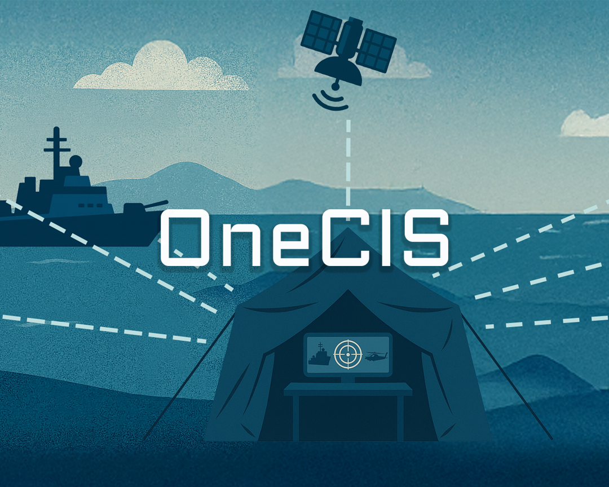

01
Map the delivery flow
Review CIO needs, OneCIS support paths, HR tools, and integration handoffs with MilDef teams.
MilDef is scaling rugged IT, software, and services for defense customers. OneCIS already carries real NATO interoperability work, so delivery systems must stay simple, secure, and fast.
We noticed the CIO hiring signal while MilDef is expanding capacity and pushing OneCIS into more field use. That points to a digital backbone that must support fast growth.

The CIO search tells us MilDef is scaling more than production space. It likely needs cleaner systems for people, delivery, documents, and field service. OneCIS needs repeatable deployment, secure setup, and clear handoff between teams. Hardware, software, and integration work must move as one. If these flows stay split, new orders create more manual work. The risk is slower delivery and more pressure on senior engineers.
We would start with a dedicated squad under MilDef's Product Owner or CIO office. The goal is a practical delivery layer for internal systems, OneCIS support flows, and secure integrations.
Review CIO needs, OneCIS support paths, HR tools, and integration handoffs with MilDef teams.
Create one secure workflow for requests, documents, approvals, and status across delivery teams and sites.
Integrate the workflow with Microsoft, SQL, and service tools through APIs and clear audit logs.
Run weekly demos, QA the flow with real users, and harden access before wider rollout.
Elinext is a full-cycle software development partner since 1997. We have about 700 in-house specialists and use no freelancers or subcontractors. For MilDef, the fit is secure enterprise web work, QA, DevOps, and dedicated teams. We hold ISO 9001 and ISO 27001 certifications. This fits a CIO-led push for cleaner systems and steady delivery. We can support MilDef's product people while your experts keep owning the mission.

Elinext formed five teams for a manufacturing execution system and supported complex customer integrations.
The system became a core revenue driver, with long-term support and around-the-clock monitoring.
Read the case studyElinext built a web talent system to replace spreadsheets and centralize staff data.
Relevant to CIO work around people systems, permissions, documents, and skill review.
Read the case study